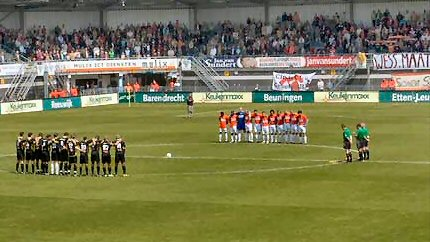
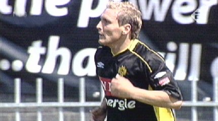
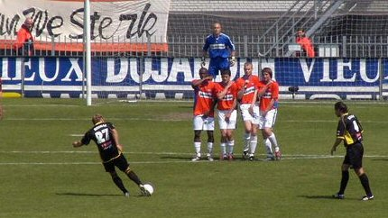
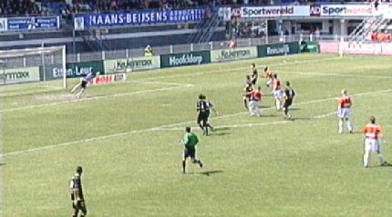
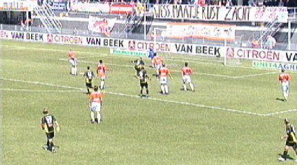
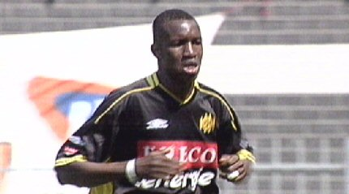
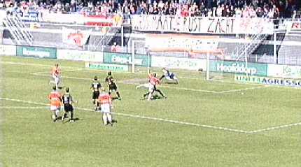
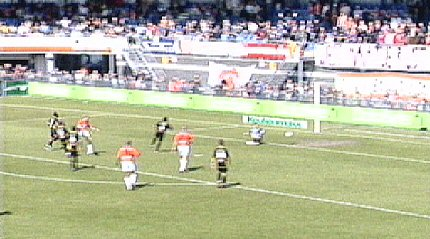
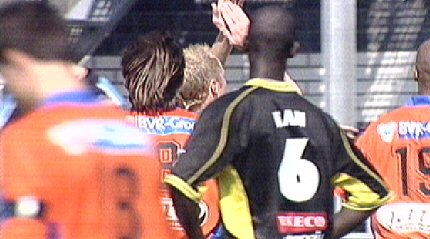

|
RBC - Roda JC (3-1) 15 mei 2005 |
RBC -
Roda JC (3-1) 15 mei 2005

Een minuut stilte voor de verleden week overleden RBC-supporter.
(foto sv-roda).

Bodnar heeft heden geen geluk met zijn kanonskogels.

Zoals hier bijvoorbeeld (foto:sv-roda).

Donny de Groot speelt Hakansson aan die de bal erin knalt: 1-0,
(24'). Dit
is geen fijn debuut voor Budziak die voor Kujovic mag spelen.

Cissé verzendt een bal naar de uiterste bovenhoek. Koné verlengt
de krul
en brengt de stand daarmee op 1-1, (35').

Cissé lijkt niet vrolijk.

Hakansson scoort in de 77e min. zijn tweede: 2-1.

De afgang voor Roda wordt nog groter als Guijt in de 90e min. 3-1
scoort.

Kah speelde vanmiddag toch weer mee.
Roda zakt een plaatsje en kan volgende week niet verder
meer omlaag. De
achtste plaats kan zelfs heroverd worden op RKC, maar dan zal er minimaal
gelijkgespeeld moeten worden tegen PSV en zal RKC moeten verliezen.
Doordat Heerenveen de vijfde plaats veiligstelde gaat Roda toch nog Europa
in. Weliswaar "slechts" Intertoto, maar het is minimaal een prima oefening
en mogelijk levert het een of meerdere leuke trips op voor de supporters.